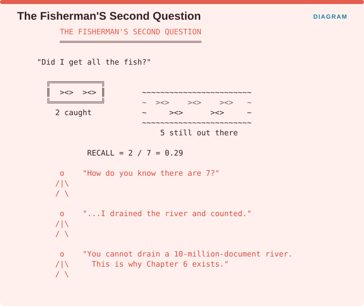
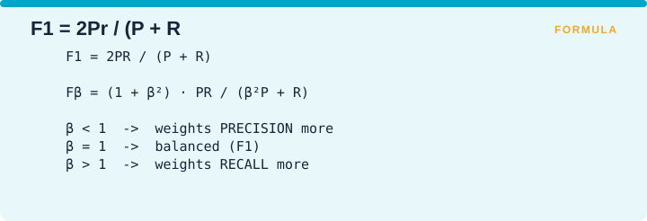
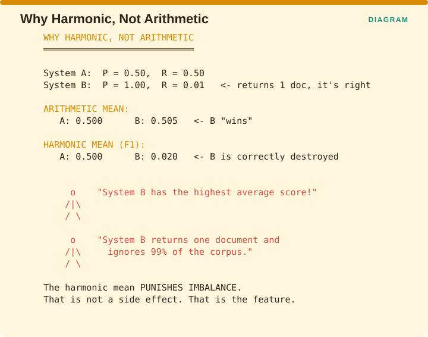
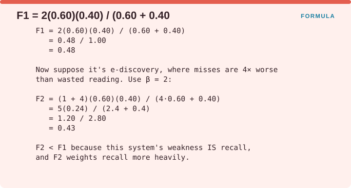
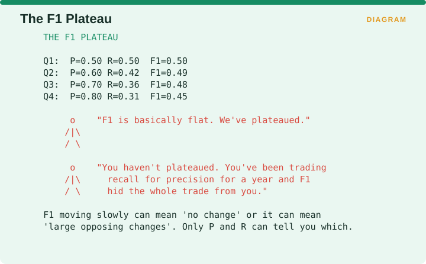
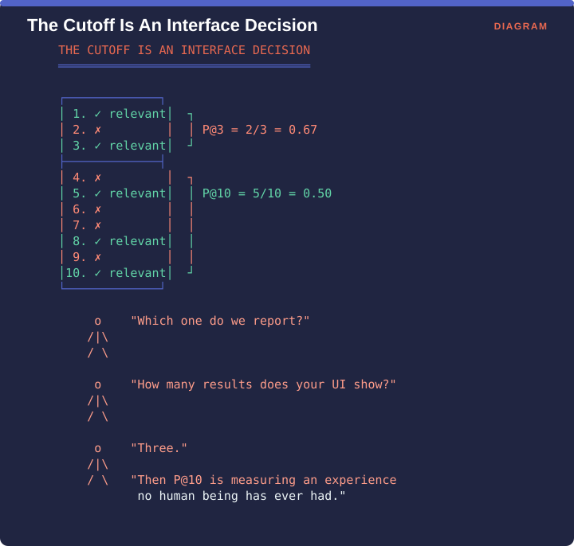
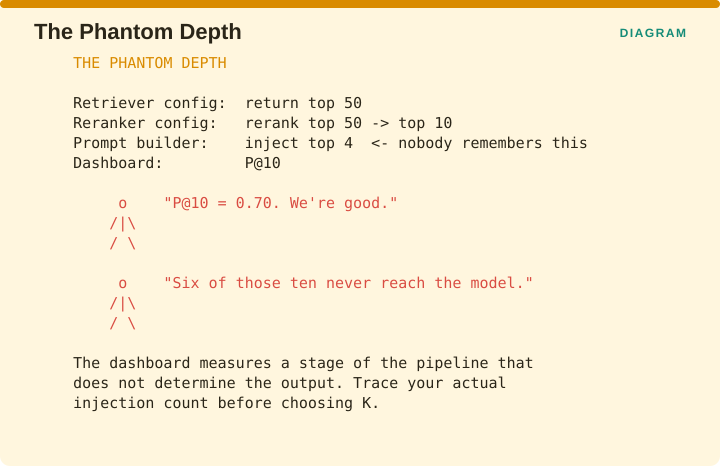
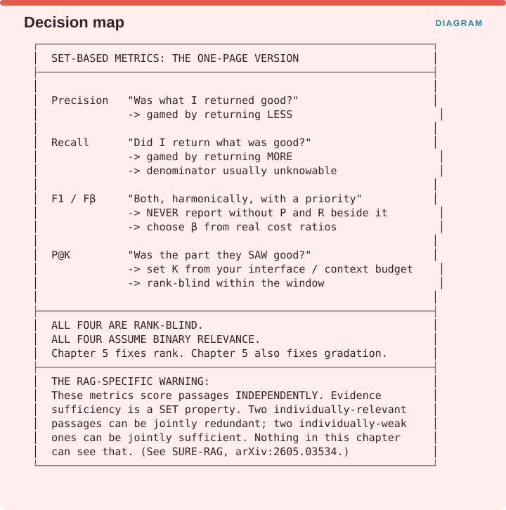

Measuring Retrieval › Chapter 4 - Set-Based Metrics
Chapter 4 - Set-Based Metrics
We start with the oldest family of metrics in the book. Everything in this chapter predates the web, most of it predates 1980, and all of it is still sitting on your dashboard.
These four metrics share an assumption that is worth naming at the outset. They treat the results your system returns as a set, meaning an unordered bag of documents where nothing is first and nothing is last, and they treat relevance as a yes or no property. Both assumptions are wrong about real systems, and Chapter 5 exists to fix them. They are still the right place to begin, because everything later is built out of these pieces.
4.0 The confusion matrix, and why it deserves respect
Every metric in this chapter comes from the same small table. Suppose you have a collection of documents, somebody has asked a question, and for each document in the collection there are two independent facts: whether your system returned it, and whether it was actually relevant. That gives four possible combinations.

A document that is relevant and was returned is a true positive, written TP, and that is the case you want. A document that is relevant and was not returned is a false negative, written FN, which is a miss. A document that is irrelevant and was returned is a false positive, written FP, which is noise the reader has to wade through. A document that is irrelevant and was not returned is a true negative, written TN, and that is the ordinary, uninteresting case.
Precision is TP divided by (TP + FP), which asks how much of what you returned was any good. Recall is TP divided by (TP + FN), which asks how much of the good material you managed to return.
The reason retrieval uses these two rather than plain accuracy is an asymmetry in that table that almost nobody mentions. The true negative box is enormous and it is useless. In a collection of ten million documents where twenty are relevant to a given question, there are roughly 9,999,980 true negatives, so any metric that counts them will be dominated by them. A system that returns nothing at all gets every one of those true negatives right and scores about 0.999998 on plain accuracy. This is worth internalizing, because the same trap comes back in RAG: any metric whose denominator is dominated by cases that are trivially correct will look excellent and mean nothing.
4.1 Precision
One-line: Of the documents you returned, what fraction were relevant?
Formula: P = TP / (TP + FP)
Facets: Correctness | query | ref | R | ESTABLISHED VERIFIED (Manning, Raghavan & Schütze, Ch. 8)
The problem it solves
Imagine you have run a search and you are now looking at the results. Before you can ask whether the system found everything, there is a cheaper and more immediate question: is the material in front of you worth reading? Somebody has to open each of these documents and decide whether it helps, and every document that turns out to be irrelevant is time that person spent for nothing. Precision is the measurement of that wasted time, and it is the only metric in this chapter you can compute without knowing anything about the documents you did not return.
The idea
Precision counts how many of the returned documents were relevant, and divides by how many you returned. Nothing in the calculation refers to the collection as a whole, so precision is completely silent about what you missed. A system that returns exactly one relevant document and stops there scores a perfect 1.0, even when nine hundred other relevant documents are sitting in the collection untouched.

The fishing image in the figure is the clearest way to hold this. Precision asks whether everything in your net is actually a fish. A net holding four fish and nothing else scores 1.0. A net holding two fish, a boot and a tin can scores 0.5. Neither fisherman has any idea how many fish are still swimming in the river, because that is a different question entirely, and it is the question §4.2 takes up.
Worked example
A legal search is run for “force majeure precedent, shipping, 2020-2024” and returns 10 documents. A paralegal reads all ten and finds that 6 of them are on point, while the other 4 turn out to be about force majeure in construction contracts, which is the right doctrine in the wrong industry.

So TP is 6 and FP is 4, and precision is 6 divided by (6 + 4), which is 0.60. Read plainly, sixty percent of the paralegal’s reading time was well spent and forty percent was not.
Advantages
- Directly interpretable as wasted effort. The
quantity
1 - Pis the fraction of the returned material a human has to read and throw away, so a precision of 0.60 means 40% of the reading was wasted. No other metric in this book maps onto a cost that cleanly. - Cheap to judge. You only need relevance labels for the documents you actually returned, which keeps the annotation budget small and predictable.
- Robust to corpus size. Since the calculation never refers to the whole collection, you do not need to know how many relevant documents exist, and the number stays meaningful as the collection grows.
Disadvantages
- Silent about misses. This is the big one. Precision cannot tell the difference between a system that found everything and a system that found almost nothing, as long as both were tidy about what they returned.
- Trivially gamed by returning less. Precision climbs as soon as you return only the single result you are most confident in, which is why optimizing for unqualified precision tends to produce a system that answers fewer questions rather than a better one.
- Ignores rank. Precision@10 gives the same score whether the relevant document sat at position 1 or position 10, although users emphatically do not experience those as the same. Chapter 5 exists to fix this.
- Set-based judgment hides gradation. A document that is partly relevant has to be forced into a yes or a no, so the assessor’s real opinion is lost. Graded relevance metrics such as nDCG handle this properly.
Domain examples
Legal and e-discovery. Precision is a direct budget line here. In a document review costing roughly one to three dollars per document, a precision drop from 0.6 to 0.4 across a 50,000-document production adds a six-figure sum to the review cost, which is why legal teams often write a minimum precision into the contract.
Clinical decision support. In this setting precision is a safety measure rather than a cost measure. A clinician who receives five guideline excerpts of which two apply to the wrong patient population has been actively harmed, because the irrelevant material competes for attention during a decision made under time pressure. This is the domain where RAG-X measured 22% pairwise redundancy, meaning the same guidance came back twice while guidance that was never returned at all stayed missing.
E-commerce search. Precision maps onto whether people buy anything. A shopper searching for “waterproof hiking boots women’s 8” who gets men’s boots and non-waterproof boots in the top ten will usually give up. In this domain precision at a very shallow depth, P@3 or P@5, matters far more than P@10, for the simple reason that a phone screen shows about three results.
Recommendation
Never report precision on its own. Pair it with recall or with something that stands in for recall, and the standard pairing is F1, which §4.3 covers. In production the more useful arrangement is precision at a shallow depth alongside recall at a deeper one, for example P@3 reported next to Recall@50, because those two answer genuinely different operational questions: is the top of the page clean, and did we find the thing at all?
Set your depth to match your interface. If your interface shows three results, then P@10 is measuring an experience none of your users are having.
Failure mode to watch

The figure traces a team over one quarter. In week 1 they report P@10 of 0.55 while returning ten results. By week 4 P@10 has reached 0.71 and everyone is pleased. In week 8 they report P@5 of 0.80, and by week 12 they report P@3 of 0.91 and call it the best quarter ever. Asked what recall did over the same period, they explain that they stopped tracking it in week 3.
Every number went up, and the system found strictly less material every single week. The team had not improved retrieval, they had improved precision by returning less, which is exactly the gaming behaviour precision invites when nothing is watching the other side.
4.2 Recall
One-line: Of all the relevant documents that exist, what fraction did you return?
Formula: R = TP / (TP + FN)
Facets: Correctness | query | ref | R | ESTABLISHED VERIFIED (Manning Ch. 8)
The problem it solves
Precision tells you whether the material in front of you is worth reading, and it will happily report a perfect score for a system that found one document out of five hundred. If the cost of missing something is high, that is the wrong question. What you need to know is how much of the relevant material in the collection your system actually managed to surface, which means counting the documents that never appeared, and that is what recall does.
The idea
Recall counts the relevant documents you returned and divides by the total number of relevant documents that exist. It is precision’s mirror image and its natural adversary, because you can almost always buy one by giving up the other simply by adjusting how much you return.
Recall has a structural problem that precision does not, and it is severe. Computing recall requires knowing FN, the number of relevant documents you failed to return, which means knowing how many relevant documents exist in the whole collection. For any collection of realistic size, nobody knows that number. This is the hardest practical problem in retrieval evaluation and Chapter 6 is devoted entirely to working around it.

The fisherman’s second question is whether he got all the fish. If he caught 2 and 5 are still in the river, his recall is 2 divided by 7, which is 0.29. The figure then asks the question that matters: how does he know there are seven? The only honest answer is that he drained the river and counted, and you cannot drain a ten-million-document river.
Worked example
Continuing the legal search from §4.1. To establish the truth, a senior associate reviews a random sample of the collection plus the results of several targeted searches, and concludes that 15 genuinely on-point documents exist. Your system returned 6 of them.

So TP is 6 and FN is 9, and recall is 6 divided by (6 + 9), which is 0.40. Note what has happened across the two sections. Precision on this same result set was 0.60 and recall is 0.40. Two numbers, one set of results, and two quite different stories about how the system is doing.
Advantages
- The right metric when misses are expensive. In legal discovery, medical safety, patent search and compliance, a document you failed to find can be catastrophic in a way that an extra irrelevant document never is.
- Harder to game than precision. Returning everything inflates recall while visibly destroying precision, so the gaming announces itself.
- Sets the ceiling for everything downstream. This is under-appreciated in RAG. Your generator cannot use what your retriever never fetched, so recall is the upper bound on how much genuine grounding the system can possibly achieve.
Disadvantages
- The denominator is usually unknowable. This is not a small caveat. Recall reported by most production systems is recall against a labelled subset of the collection, which can differ from true recall by a wide margin that nobody has measured.
- Trivially gamed by returning more. Recall@1000 will look wonderful and tell you nothing.
- Says nothing about rank or redundancy. A recall of 0.9 reached by returning the same fact nine times looks identical to a recall of 0.9 across nine distinct facts, which is precisely why RAG-X’s Exclusive Hit Rate exists.
- Insensitive to context-window economics. In RAG, a high recall at k=50 is worthless when you can only fit five chunks into the prompt.
Domain examples
Patent prior-art search. Recall is close to the only thing that matters, because missing a single piece of prior art can invalidate a patent years later at enormous cost. Searches in this field routinely accept precision below 0.1 in exchange for recall above 0.95, since the reviewer’s time is cheap compared with the downside.
Pharmacovigilance and adverse-event detection. A missed report is a regulatory failure, so systems are tuned for very high recall and human triage absorbs the resulting flood of false positives. This is a domain where the cost dimension from Chapter 12 is being sacrificed consciously, which is the right way to sacrifice it.
Customer-support RAG. Here the calculation inverts. A support bot that retrieves 50 chunks to guarantee recall will exhaust its context budget, and Lost in the Middle (Liu et al., TACL, arXiv:2307.03172 VERIFIED) shows that material placed in the middle of a long context gets under-used anyway. Recall beyond what the generator can actually attend to is recall you paid for and did not receive.
Recommendation
Report recall at the depth your generator actually consumes rather than the depth your retriever returns. If you retrieve 50 documents and pass 5 into the model, then Recall@5 is your real recall, and Recall@50 is a statement about a reranker you may not even have.
In domains where misses are expensive, do not chase recall by itself. Pair it with an estimate of how much of the relevant set your labels actually cover, because an unqualified claim of “recall 0.85” measured against labels covering 10% of the collection is a claim about your labels rather than about your system.
Failure mode to watch

A team reports Recall@50 of 0.92, which looks excellent. The pipeline then passes only the top 5 chunks to the generator, and recall at that depth is 0.61. Of those five, some sit in the middle of the prompt where the model attends to them least, so the effective figure is lower again by an unknown amount. The retriever has 92% recall and the generator has 61% recall, and the second number is the one that determines the answer.
4.3 F-measure, F1, and Fβ
One-line: The harmonic mean of precision and recall, optionally weighted toward one of them.
Formula:

Facets: Correctness | query | ref | R | ESTABLISHED VERIFIED (Manning Ch. 8)
The problem it solves
You now have two numbers that move in opposite directions, which means a team reporting its own results can always lead with whichever one looks better this month. Two numbers also make ranking systems awkward, because a system with higher precision and lower recall is neither clearly better nor clearly worse than its rival. F-measure exists to collapse the pair into a single figure that cannot be improved by sacrificing one side.
The idea
The formula in the figure has two parts. F1 is 2PR divided by (P + R), which is the harmonic mean of precision and recall. The general form, Fβ, is (1 + β²) multiplied by PR, divided by (β²P + R), where β is a number you choose. Setting β below 1 weights precision more heavily, setting β to exactly 1 gives the balanced F1, and setting β above 1 weights recall more heavily.
The choice of a harmonic mean rather than an ordinary average is the whole design, and it is what makes the metric hard to cheat.

Compare two systems. System A has precision 0.50 and recall 0.50. System B returns exactly one document, which happens to be correct, giving precision 1.00 and recall 0.01. Under an ordinary average, A scores 0.500 and B scores 0.505, so B wins, which is absurd for a system that ignores 99% of the collection. Under the harmonic mean, A scores 0.500 and B scores 0.020, because the harmonic mean is pulled hard toward whichever number is smaller. Punishing imbalance is not a side effect of the harmonic mean. It is the reason it was chosen.
Worked example
Take the legal search, where precision was 0.60 and recall was 0.40.

F1 is 2 multiplied by 0.60 multiplied by 0.40, divided by (0.60 + 0.40). The top comes to 0.48 and the bottom comes to 1.00, so F1 is 0.48.
Now suppose this is e-discovery, where a missed document costs roughly four times as much as a document somebody read unnecessarily. That ratio of four to one is what β encodes, so set β to 2, since β is squared inside the formula. F2 is (1 + 4) multiplied by 0.60 multiplied by 0.40, divided by (4 × 0.60 + 0.40). The top is 5 × 0.24, which is 1.20, and the bottom is 2.4 + 0.4, which is 2.80, so F2 is 0.43.
F2 came out lower than F1, and the reason is worth stating. This system’s weakness is its recall, and F2 weights recall more heavily, so the score falls once you tell the metric which failure you actually care about. Choosing β is choosing which failure you fear.
Advantages
- One number, honestly derived. F1 gives you a single figure for ranking systems while still penalizing extreme imbalance.
- β makes your priorities explicit and auditable. Writing down that you optimize F2 because a missed document costs four times a reviewed one is a defensible engineering statement that somebody else can check.
- Standard and comparable. It is close to universal, so published benchmark numbers are interpretable against your own.
Disadvantages
- Collapses information you often need. An F1 of 0.48 could come from precision 0.6 with recall 0.4, or from precision 0.4 with recall 0.6, and those two situations call for entirely different fixes. Always print P and R next to F1.
- β is usually chosen by default instead of by analysis. Most teams use F1 because it is what everyone uses, rather than because their costs are symmetric, and costs almost never are.
- Still rank-blind and still set-based. Every limitation from §4.1 and §4.2 carries over intact.
- Poor fit for graded relevance. Forcing a “somewhat relevant” document into a binary label throws away real signal before the formula ever sees it.
- Misleading when relevant-set sizes vary. Averaging F1 across queries whose relevant sets differ wildly in size lets the easy queries dominate the average.
Domain examples
E-discovery. F2 or even F3 is common, because the cost ratio weighs the risk of sanctions for missing a responsive document against the cost of reviewing too much. Some protocols write the value of β into the discovery agreement itself.
Spam and abuse filtering in search. F0.5 is typical here, since suppressing a legitimate result is worse from the user’s point of view than letting one piece of spam through.
RAG chunk selection. F-measure is often the wrong tool in this setting and it is worth saying so plainly. Chunk-level precision and recall assume each chunk is relevant on its own, and chunks are not independent in that way: two chunks can each be relevant while together being redundant, or each be marginal while together being sufficient to answer the question. That set-level property is exactly what SURE-RAG (arXiv:2605.03534) was built to capture, on the grounds that missing reasoning steps and unresolved conflicts between passages cannot be detected by scoring passages one at a time.
Recommendation
Use F1 as a summary line and never as your primary optimization target, and never print it without precision and recall beside it. Choose β deliberately by writing down the cost ratio between a false positive and a false negative in your domain, in whatever units you actually care about, whether that is dollars, minutes or risk, and then derive β from that ratio rather than accepting the default.
If you cannot state that cost ratio, the problem is not the metric. Define what the system is for, and β will follow.
Failure mode to watch

Four quarters of a real-looking dashboard. In Q1, precision 0.50 and recall 0.50 give F1 of 0.50. In Q2, precision 0.60 and recall 0.42 give 0.49. In Q3, precision 0.70 and recall 0.36 give 0.48. In Q4, precision 0.80 and recall 0.31 give 0.45. Looking at F1 alone, the team concludes they have plateaued.
They have not plateaued. They have spent a year trading recall away for precision, and F1 concealed the entire trade because the two changes were pulling the number in opposite directions. A slow-moving F1 can mean nothing is changing or it can mean two large changes are cancelling out, and only precision and recall printed separately can tell you which.
4.4 Precision@K
One-line: Precision computed over only the top K results.
Formula:
P@K = (relevant documents in top K) / K
Facets: Correctness | query | ref | R | ESTABLISHED VERIFIED (Manning Ch. 8)
The problem it solves
Plain precision assumes your system hands back a set, and real systems hand back a list that somebody reads from the top and stops partway down. A person looking at a phone sees about three results, and a language model receives however many chunks the prompt has room for. Scoring the whole returned list therefore measures an experience nobody is having. P@K fixes this in the crudest possible way, by ignoring everything past position K.
The idea
Count the relevant documents in the top K positions and divide by K. The cutoff is a hard one, so a document at position K counts fully and a document at position K+1 counts not at all, and K is a decision about your interface rather than a property of your system.

The figure ranks ten results with relevant documents at positions 1, 3, 5, 8 and 10. Cut at 3 and you have 2 relevant out of 3, so P@3 is 0.67. Cut at 10 and you have 5 out of 10, so P@10 is 0.50. Both are correct, they are simply about different readers, and the question of which to report is settled by asking how many results your interface shows. If the answer is three, then P@10 describes an experience no human being using your system has ever had.
Worked example
A RAG pipeline retrieves 10 chunks and passes the top 3 into the prompt, because that is all the context budget allows. The relevant chunks sit at positions 1, 3, 5, 8 and 10.

At the top 3 there are 2 relevant chunks, so P@3 is 2 divided by 3, which is 0.67, and that is what the generator actually sees. At the top 5 there are 3, so P@5 is 0.60. At the top 10 there are 5, so P@10 is 0.50, and that describes what the retriever produced.
The number that determines the quality of the final answer is P@3. The number most teams report is P@10.
Advantages
- Matches how systems are actually consumed. Both human attention and context windows are truncated, and P@K is truncated in the same place.
- No need for full corpus labels. You judge K documents per query, which is an annotation budget you can plan and afford.
- Directly actionable. If P@3 is low while P@10 is healthy, the problem is your reranker rather than your recall, and you know where to look.
- Composable with the context budget. Setting K to the number of chunks your prompt holds turns P@K into a genuine measure of what the generator receives.
Disadvantages
- Rank-blind inside the window. For P@10, relevant documents at positions 1, 2 and 3 score identically to relevant documents at positions 8, 9 and 10, although users experience those as completely different result pages.
- The arbitrary cutoff creates a cliff. A document at position K+1 contributes nothing while one at position K contributes fully, so a tiny change in ranking can move the metric sharply for no meaningful reason.
- Not comparable across different K. P@3 and P@10 are two different metrics rather than two precisions of the same thing, so you cannot compare a team reporting one against a team reporting the other.
- Insensitive to how many relevant documents exist. If only one relevant document exists in the whole collection, P@10 cannot exceed 0.1 no matter how perfectly the system performed. R-Precision was invented to fix exactly this, and Chapter 6 covers it.
Domain examples
Mobile e-commerce. Use P@3 or P@4, matched to what fits on the screen. Anything deeper is measuring scrolling behaviour that most sessions never produce.
RAG with a tight context budget. Set K to the number of chunks you actually inject. If you inject five chunks of 1,024 tokens each, P@5 is your operative precision. RAG-X used k=3 with 1,024-token chunks, and the fact that they stated the configuration explicitly matters as much as the particular value they chose.
Enterprise document search with expert users. A deeper K is legitimate here, because a financial analyst working through filings will genuinely scan twenty results, which makes P@20 a real measurement of their experience rather than a theoretical one.
Recommendation
Choose K from your interface or your context window, and then never change it quietly. If you do have to change K, report both the old and the new value for at least one release cycle, and expect the metric to move for reasons that have nothing to do with quality.
Report at least two depths: a shallow one matching what is consumed, and a deeper one matching what is retrieved. The gap between those two numbers is the headroom available to your reranker.
Failure mode to watch

Trace a real pipeline. The retriever is configured to return the top 50. The reranker cuts those 50 down to 10. The prompt builder, written by somebody else eighteen months ago, injects the top 4, and nobody currently on the team remembers that. The dashboard reports P@10 of 0.70 and everyone is satisfied, while six of those ten documents never reach the model at all.
The dashboard is measuring a stage of the pipeline that does not determine the output. Trace your actual injection count before you choose K.
4.5 Chapter 4 summary card

The four metrics in one page. Precision asks whether what you returned was good, and it is gamed by returning less. Recall asks whether you returned what was good, it is gamed by returning more, and its denominator is usually unknowable. F1 and Fβ combine the two harmonically with a priority you choose, they should never be reported without precision and recall beside them, and β should come from a real cost ratio. P@K asks whether the part the reader actually saw was good, K should come from your interface or your context budget, and it is blind to rank inside the window.
Two limitations apply to all four. Every one of them is rank-blind, and every one of them assumes relevance is a yes or no property. Chapter 5 fixes both.
There is also a warning specific to RAG. These metrics score passages independently of one another, and evidence sufficiency is a property of the set as a whole. Two individually relevant passages can be jointly redundant, and two individually weak ones can be jointly sufficient to answer the question. Nothing in this chapter can see either case, which is what SURE-RAG (arXiv:2605.03534) was built for.
Measuring Retrieval · Madhava Gaikwad · First edition, September 2026